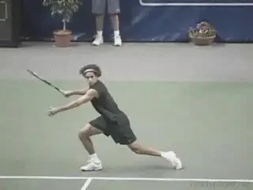
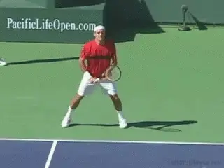
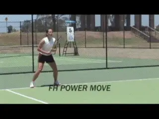
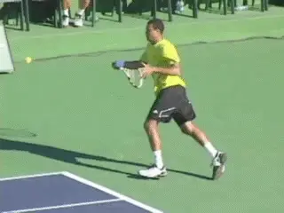
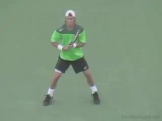
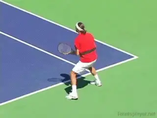

Return of Serve: Defensive Contact Moves¶
David Bailey

The Power Move: a long lunging cross step to return a wide fast serve.
In this series we are looking at the Contact Moves to develop world class footwork on the return of serve. In the last article, we looked at the patterns for aggressive returns. (Click Here.) Now let's turn to defensive returns.
The classic Defensive Contact Move on the return of serve is what I call the Power Move. Players use the Power Move on the return on both the forehand and backhand sides when they are pushed wide, with the weight moving across the body on a diagonal sideways or even backwards.
The Power Move allows players to cut off the angle of the oncoming ball. It also allows them to keep good balance so the recovery footwork can be dynamic and explosive.
For each of these Contact Moves we will outline:
1. Type ball on which to use contact move
2. Out steps or the steps to set up the stance
3. Hitting Stance
4. Contact Move itself
5. Corresponding Balance Move
6. Recovery Steps

A pivot into an open stance, the lunge step and landing, a breaking step and a crossover recovery step.
Forehand Return Power Move
When the opponent hits a fast, wide serve, cutting this ball off requires a large lunging step across the body with the front foot. This is the Power Move.
The out step for the power move is usually a pivot step or a step out with the foot closest to the ball. The out step turns the body sideways into an extreme open stance. This is followed by the power lunge step. At times players may also add one shuffle step to get closer to the ball. This is then followed by the power move.
When the player is forced very wide, however, the out step can change to a drop step. This is because the drop step is more effective for rapid, explosive movement.
This means the foot closest to the ball turns and drops back underneath the player's body. The drop step can be followed by the lunge step, or by a shuffle step and then the lunge step. But in extreme cases, the player can also take 2 rapid cross steps to set up the open stance, before taking the final lunging step across.
In developing the Power Move, it is important to understand the difference between jumping and lunging. Since a power move return tends to be hit off an unstable, moving base, the secret is staying down through the shot as much as possible. Jumping leads to a loss of balance and power and either hitting the ball long or dumping it in the net.

An extreme Power Move: a drop step, two cross steps, the lunge step, a breaking step, and two crossover recovery steps.
The lunge step starts from an extreme open stance. The lunge is a very athletic move, and can be up to several feet in length. The step usually crosses the player's body on a diagonal forward, but can also be sideways, or at times even backwards, depending on the ball.
The player makes contact with the front foot in the air, and often the rear foot as well. At contact the leg that is lunging is typically part way across the body. It then lands on the court a split second after contact.
Because the lunge step is a large step that crosses the body, the hips are more closed than on other returns. The head should remain still and the angle of bend in the legs also remains unchanged. This helps the player stay low.
Typically after the hit the player continues to move in the direction of the lunge, taking one or more breaking steps. But the player may also decide to "go for it," attempting an outright winner with no intention to recover back towards the court.
The balance move of the forehand power return move is a kick back with the back leg. As the player makes contact, the back leg kicks back towards the side fence. The rear leg kicks back, then swings around and stops the body with a breaking step on the court.

The kick back balance move, the breaking step, and the crossover recovery.
The kick back helps stop over rotation, ensures good balance, and stops the body from taking wasted steps. Kicking the leg back also helps extend the swing outward through point of contact.
The recovery pattern is influenced by where the player hits the return. If you hit the return down the line and need to recover to cover a sharp angled cross court reply, you should definitely take a crossover step.
But the side skip can be used if you have directed your shot cross court. The further you are stretched, and the longer the lunge step, the more likely you will need to crossover.
The crossover recovery is a lot faster and covers more ground, but is harder to master. The best way to crossover is to ensure the leg closest to the center drops back slightly to clear the way for the outside crossing leg.
Backhand Return Power Move
Just as for the forehand return, the service ball for the Backhand Power Move is a fast wide ball that tends to land short in the service box. To cut off the angle of the ball, the player lunges across his body with a cross step with the front foot. Players use the Power Move on the return for both the one-handed and two-handed backhands.

A pivot step, a shuffle step, then the lunge, the break step, and a crossover recovery.
The out step options are the same as the forehand. A pivot step, a step out, or in extreme cases a drop step. The out steps position the player in an extreme open stance.
The player then lunges across his body to the ball, usually on a forward diagonal, although the angle can be sideways or backwards at times. Contact is with one or both feet in the air with the player landing the lunge step just after contact.
Because the backhand power move return is also hit off a moving, unstable base, the player needs to stay low through the shot, not jumping or lifting on contact. To do this the body drops at the start of the move and the head remains still with the angles in the legs constant.
The hips remain closed through contact. The rear leg then kicks back and swings around. This kick back reduces over rotation, creates balance and loads the back leg to make a break step. Kicking the leg back also increases the length of the forward swing.

A step out into an open stance, a sideways lunge step, the kick back, and then, shuffle steps to recover.
As with the forehand, the recovery pattern can be crossover or side shuffle recovery steps, depending on the ball. On the crossover, the leg closest to the center drops back slightly to clear the way for the outside crossover leg.
Over short distances the side skip or shuffle steps can be sufficient, especially if you have directed your shot crosscourt. The recovery of course can be irrelevant if the player goes for a winner and either makes or misses the ball.
So there we have it for the defensive Contact Moves. That completes our series on the footwork for return of serve. Hope your return game is already improving! Next we'll move on to other areas where footwork is critical, such as the approach, and on the recovery after the serve. Stay tuned!

David Bailey is a native Australian who has spent 15 years studying tennis at the professional level. He has developed a new language for one of the most complex and misunderstood aspects of the game, footwork and court movement. David has worked with world class players and coaches, national tennis associations and top academies, and has presented at coaching seminars around the world. His teaching system, the Bailey Method, has become a regular part of the coaching curriculum at the Nick Bollettierri Tennis Academy, where it is personally endorsed by Nick
Visit David’s Website! Click Here!
To Contact David directly Click Here!
← Previous | Footwork Home | Next →